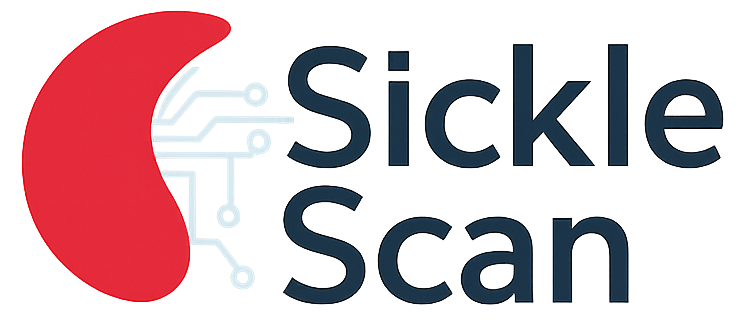
Aplicación de escritorio para la adquisición, procesamiento y reconstrucción holográfica digital en tiempo real.
Investigador Asociado y Desarrollador de Software
Proyecto Despega USACH · Microscopía Holográfica Digital ·
Aplicaciones Biomédicas
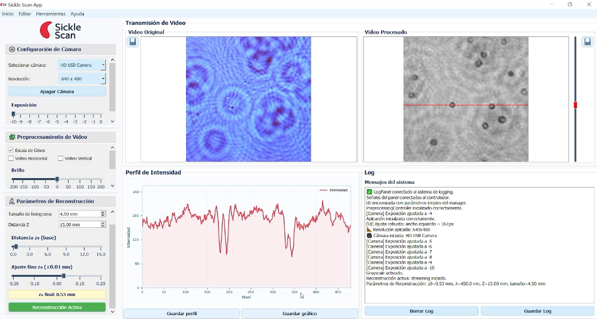
Proyecto de Innovación y Desarrollo
Sickle Scan App fue desarrollada en el marco del programa Despega USACH 2025, iniciativa orientada a financiar proyectos de innovación tecnológica con potencial de transferencia a aplicaciones reales.
El proyecto se origina a partir de una técnica de reconstrucción holográfica desarrollada en laboratorio, orientada al análisis morfológico de glóbulos rojos para la detección temprana de anemia falciforme. El objetivo principal fue escalar esta metodología experimental hacia un sistema robusto, funcional y aplicable a un dispositivo médico.
En este contexto, la investigadora Ali Godoy adjudicó el fondo y lideró la iniciativa de transferencia tecnológica, invitándome a colaborar como investigador asociado y desarrollador de software. Mi participación se centró en la optimización del algoritmo de reconstrucción, el procesamiento digital de imágenes y la construcción de la aplicación de escritorio que integra el flujo completo de trabajo en tiempo real.
El desarrollo buscó transformar algoritmos experimentales de laboratorio en una herramienta de uso práctico en contextos clínicos, mediante una interfaz gráfica intuitiva y una arquitectura robusta orientada a facilitar su adopción por personal no especializado.
Objetivos y Desafíos del Desarrollo
Rendimiento
Reducir significativamente los tiempos de procesamiento numérico para habilitar una reconstrucción interactiva y cercana al tiempo real.
Algoritmos
Optimizar y migrar el pipeline matemático desde prototipos en MATLAB hacia Python, incorporando funciones complejas de autoenfoque y validación con datos biológicos reales.
Usabilidad
Diseñar una interfaz accesible para personal no especializado, integrando controles de adquisición de imagen, procesamiento y análisis visual en una sola pantalla.
Mi Rol y Responsabilidades
Como Investigador Asociado y Desarrollador de Software, contribuí al diseño de la plataforma, abordando tanto la ingeniería de software como la investigación matemática aplicada para su futura transferencia al área biomédica.
Desarrollo de Software científico
- Diseño e implementación de una arquitectura modular para la separación eficiente de responsabilidades.
- Desarrollo de la interfaz gráfica interactiva y reactiva orientada al usuario final utilizando PyQt5.
- Migración estructural del pipeline completo de reconstrucción desde MATLAB a Python.
- Integración de controles de cámara en tiempo real (brillo, contraste, zoom) junto con herramientas analíticas como perfiles de intensidad y detección automática de glóbulos rojos.
- Empaquetado, congelamiento de dependencias y preparación del entorno para despliegue como aplicación nativa de escritorio.
Investigación Aplicada e I+D
- Optimización del algoritmo de reconstrucción holográfica para disminuir los tiempos de cómputo matricial.
- Implementación y ajuste numérico de técnicas de autoenfoque para la selección automática del plano óptico óptimo.
- Validación del desempeño del software utilizando imágenes reales de glóbulos rojos provenientes del laboratorio.
Arquitectura del Sistema
El software se diseñó bajo una arquitectura modular limpia basada en la separación estricta de responsabilidades, lo que permite que los procesos matemáticos más pesados no bloqueen la experiencia del usuario en la interfaz gráfica.
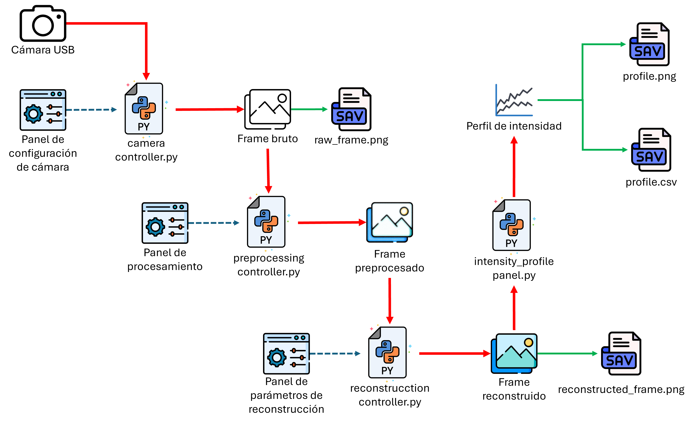
| Módulo | Responsabilidad Técnica |
|---|---|
| UI (User Interface) | Gestión de la interfaz gráfica, renderizado visual y experiencia de usuario interactiva. |
| Controllers | Orquestación y lógica de comunicación fluida entre los módulos de la aplicación. |
| Core | Motor matemático encargado del procesamiento digital de imágenes y los algoritmos de reconstrucción holográfica. |
| Models | Administración de configuraciones del hardware y estructuras de datos. |
Resultados de la Reconstrucción
A continuación se presentan ejemplos representativos obtenidos de manera directa mediante el pipeline computacional del software, transformando el patrón de interferencia lumínica en información morfológica útil.

Holograma Original

Reconstrucción Digital
Experimentación en Segmentación Celular
Como línea exploratoria de investigación dentro del proyecto, realicé pruebas preliminares orientadas a la detección y segmentación automática de células utilizando las imágenes ya reconstruidas.
Estas pruebas experimentales permitieron evaluar la factibilidad técnica de incorporar algoritmos de visión por computador como una etapa predictiva previa para futuros sistemas automatizados de clasificación de patologías.
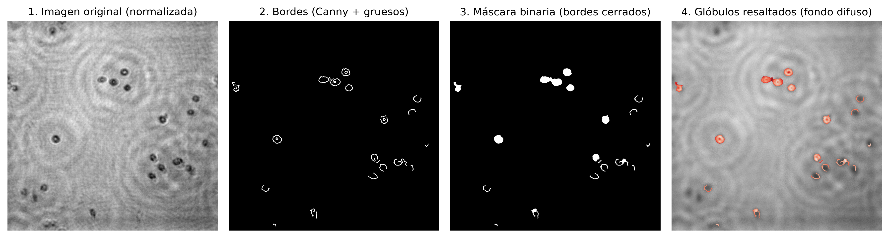
Hitos de Optimización Computacional
| Actividad Realizada | Impacto Técnico en el Sistema |
|---|---|
| Migración MATLAB → Python | Mayor accesibilidad, eliminación de licencias costosas y alta mantenibilidad del código base. |
| Optimización FFT (Transformada Rápida de Fourier) y vectorización | Reducción de los tiempos de cómputo matricial, logrando una reconstrucción 3 veces más rápida que la original. |
| Arquitectura Modular | Garantía de escalabilidad futura para añadir nuevos módulos de software o herramientas de IA sin romper el sistema. |
| GUI Interactiva Reactiva | Mejora drástica en la experiencia de usuario, facilitando la manipulación de perfiles ópticos en vivo. |
Galería del Proyecto
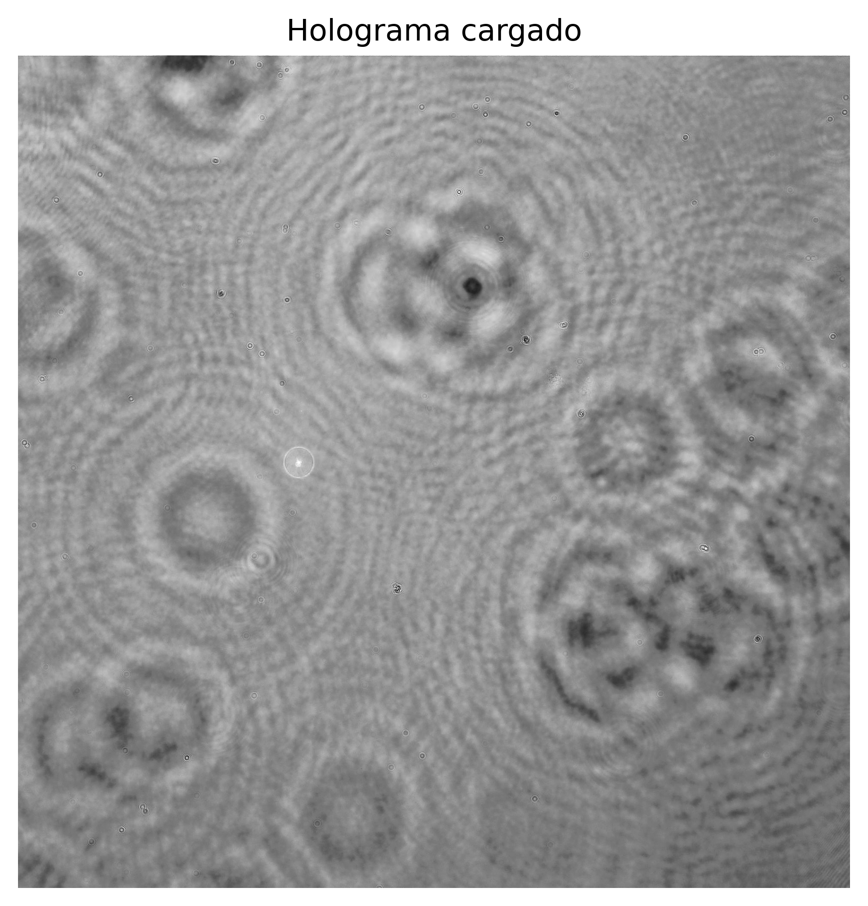
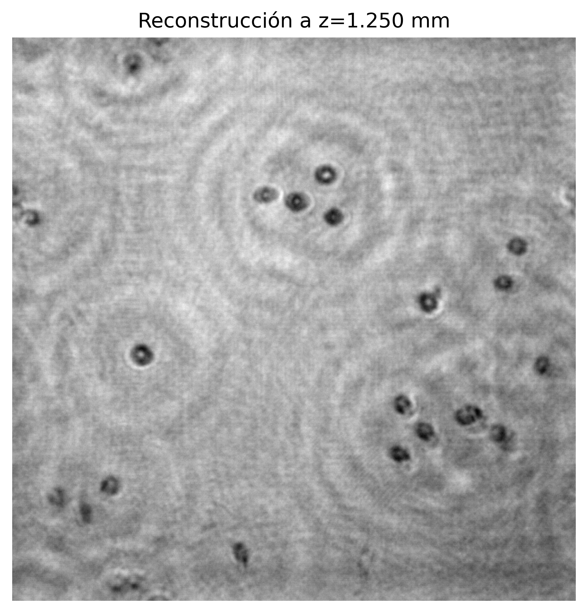
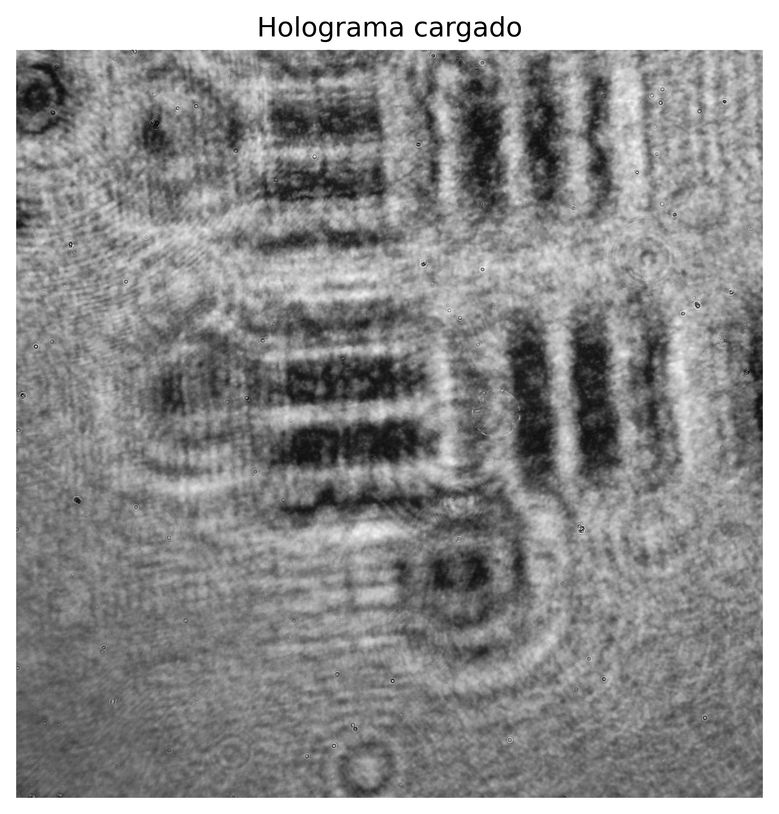
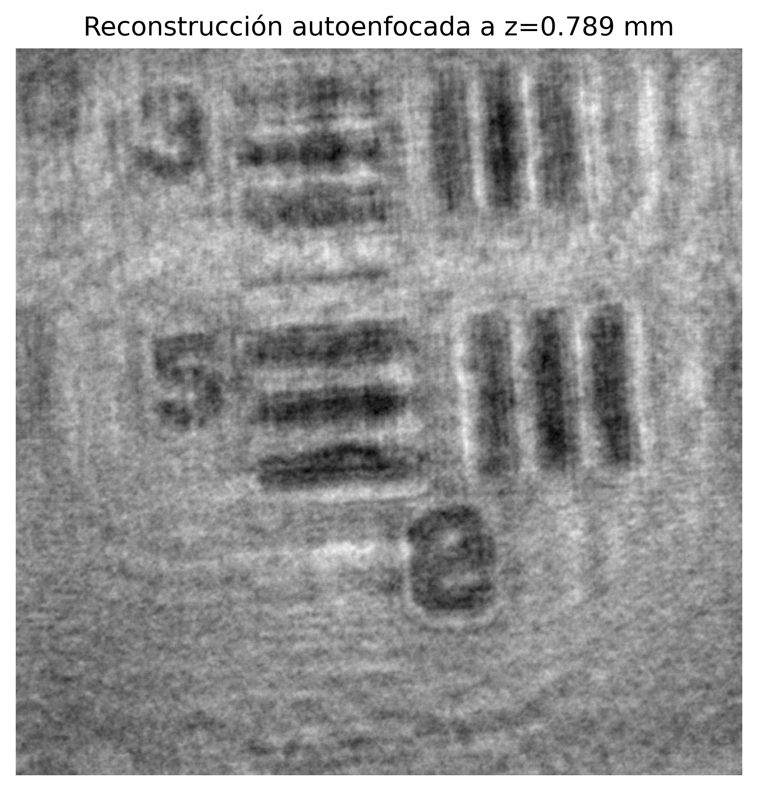
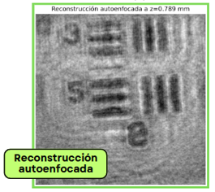
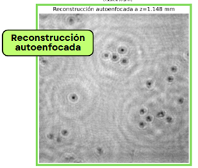
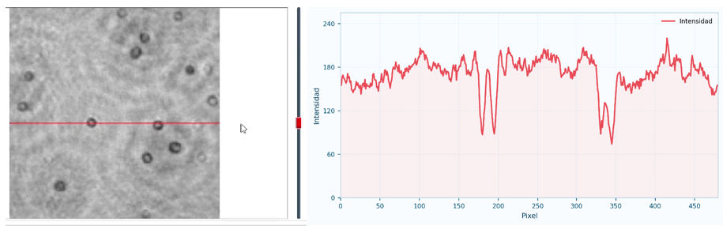
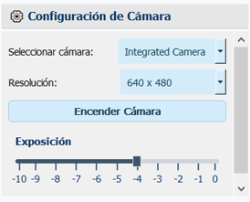
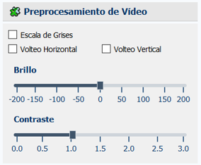
Video Demostrativo
Demostración práctica de la aplicación ejecutando la adquisición y reconstrucción dinámica en tiempo real.
Tecnologías Utilizadas
- Python 3.10+: Lenguaje de programación principal del ecosistema científico.
- PyQt5: Desarrollo de la interfaz gráfica y manejo de hilos de ejecución paralelos.
- NumPy: Procesamiento eficiente de matrices numéricas de alta densidad.
- OpenCV: Manipulación avanzada de imágenes y desarrollo de los algoritmos de segmentación.
- Matplotlib: Extracción matemática y visualización de perfiles de intensidad óptica.
- PyInstaller: Compilación y empaquetado final del ejecutable autónomo.
Estado Actual del Proyecto
Versión actual: v1.0.0
Corresponde a la primera versión estable, funcional y testeada del sistema, lista para fases de validación clínica de campo y pruebas de usabilidad avanzadas.